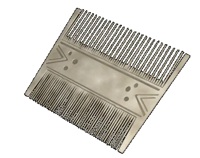

|
Обработка кости |
|
| Массовым материалом
костерезного производства XII века были кости
крупных домашних животных, рога лосей и оленей.
Иногда костерезы использовали рога быков, туров
и даже моржовую кость. Стандартными инструментами костереза были наборы ножей, пил, плоских гравировальных и циркулярных резцов, сверл-дрелей, обычных перовидных сверл, напильников и рашпилей. Большое количество костяных вещей изготавливалось на токарных станках. Из кости делали ложки, иглы, вешалки, ручки ножей и других инструментов, спицы для прялок. Из предметов туалета и костюма костяными были гребни, пуговицы и булавки, поясные пряжки. Много делали костяных шахмат и шашек, всевозможных печатей и даже подшипников (!), валиков, обкладок луков и ручек мечей. Были среди костяных изделий и художественные поделки. |
|
Текст и
иллюстрации (c) 1997 Snowball Interactive Entertainment, Inc. |